Great Mathematician's Portraits
You can click on the /photos and you will be redirected to a Google page. Click on the first link and you will be able to read each mathematician's biography.
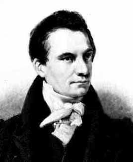
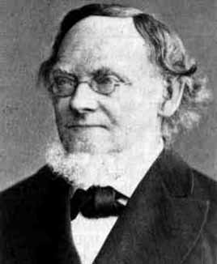
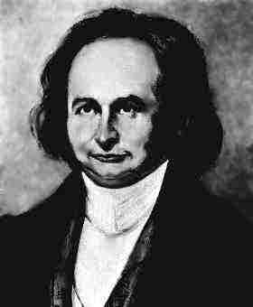
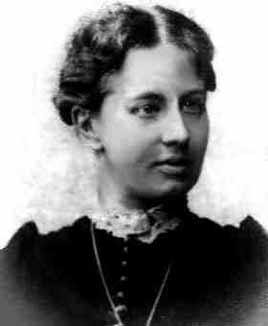
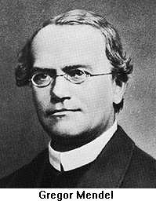
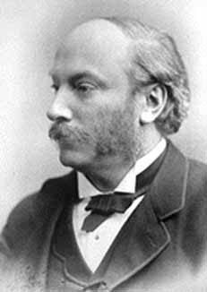


 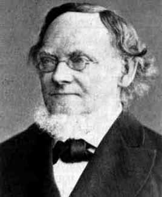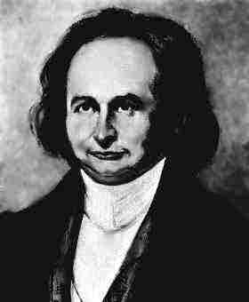
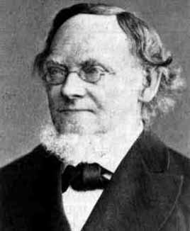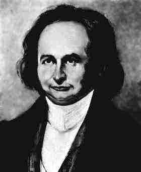
 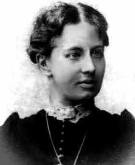
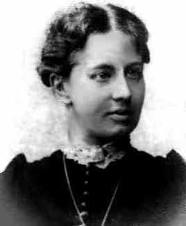 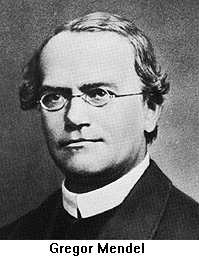
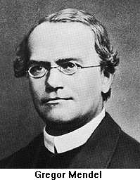
 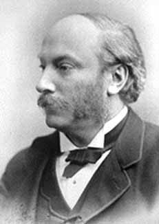
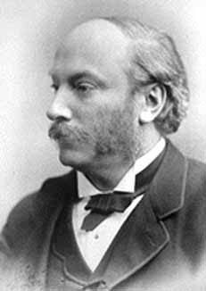